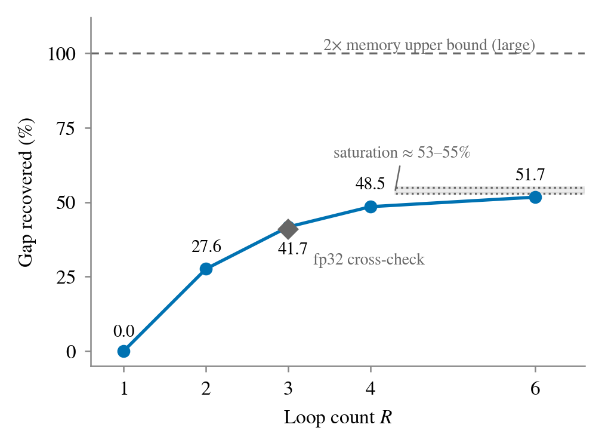
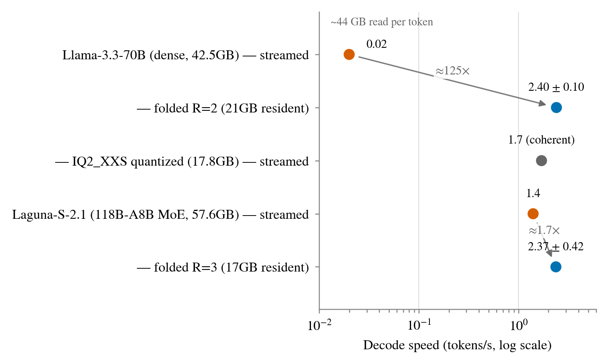
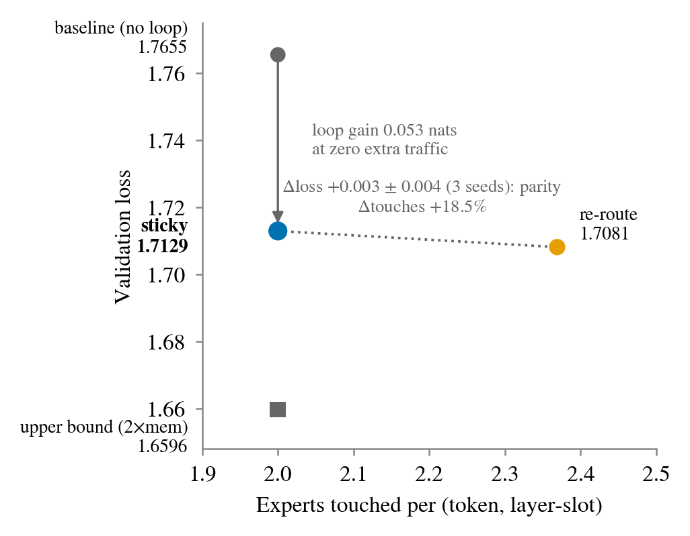
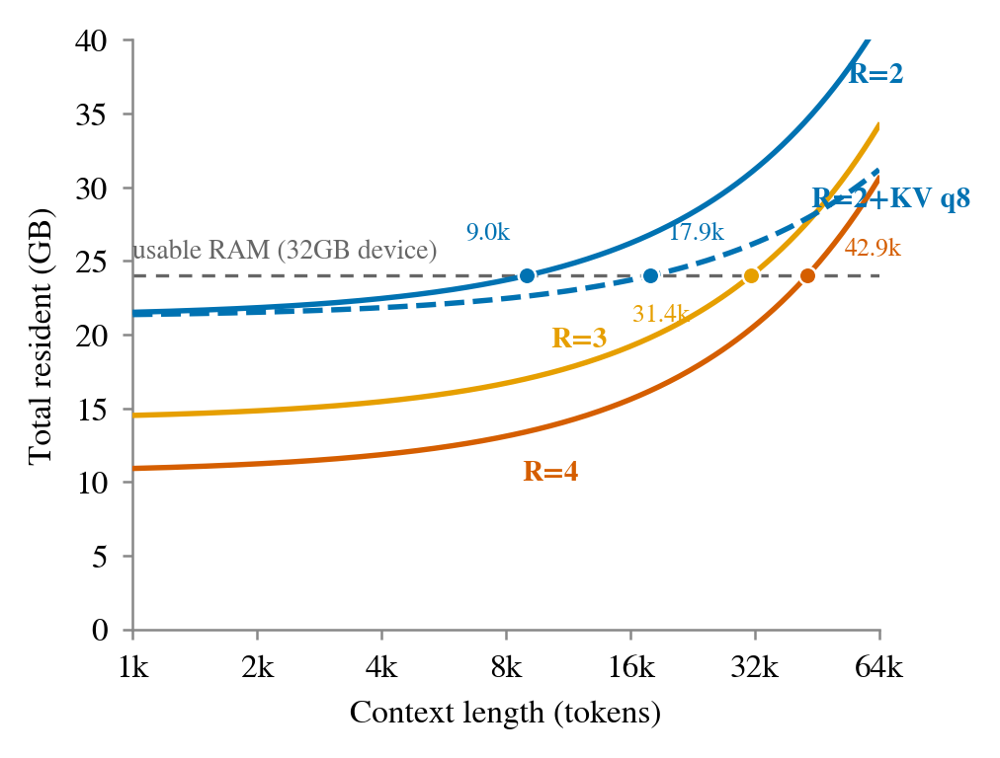

When a language model exceeds a consumer device's RAM, decoding falls off a storage cliff: every token forces the active parameters to be re-read from disk. We measure this cliff directly on an Apple M1 Max (32 GB): a dense 70B model at 4-bit reads ∼44 GB from SSD per generated token and decodes at ∼0.02 tokens/s. This paper does not propose a new recurrence mechanism — recurrent depth (executing a small stack of layers R times) is established from Universal Transformers onward. Our contribution is a re-measurement and re-framing: we treat looping as a storage-residency lever rather than a parameter- or reasoning-efficiency one, examine a previously unmeasured design axis inside looped MoE, and directly instrument the beyond-RAM decode cliff the mechanism removes. Controlled 30M-parameter studies show that at equal resident bytes and equal training tokens a looped transformer recovers 41% (dense) and up to 54% (Mixture-of-Experts) of the quality gained by doubling memory, cross-reproduced on two hardware/precision stacks; a compute-matched control shows this advantage is specific to the equal-token regime at our scale. For looped MoE, across seeds, sticky routing (re-using the first pass's expert selection) is statistically indistinguishable from free re-routing (Δ = +0.003 ± 0.004 nats, n=3) while freezing expert touches at top-k: cross-loop routing freedom buys nothing measurable, so access locality is free. An R-sweep shows saturating returns (asymptote ∼53–55%; practical optimum R=3–4). On the systems side, a ∼300-line graph-folding patch to llama.cpp removes the cliff on the same laptop: the 70B dense model accelerates from 0.02 to 2.40 ± 0.10 tokens/s (∼125×) and a 118B-A8B MoE from 1.4 to 2.37 ± 0.42 (∼1.7×), with zero swap. As a controlled endpoint we build a flattened twin of a production looped model (Nanbeige4.2-3B): a layer-duplicated checkpoint computing the identical function (greedy outputs match token-for-token). Under a memory budget admitting the folded (4.4 GB) but not the flattened (7.8 GB) form, the twin collapses to 0.1 tokens/s (231 GB of SSD reads) while the folded form sustains 15.1 tokens/s — a 151× gap with quality identical by construction, isolating residency as the sole cause. The same production model runs coherently at 49 tokens/s on this machine (a different stack and scale; §4.3), consistent with loop-native models already occupying this regime.
This work began as a failure report. Attempting to serve Qwen3.5-122B-A10B (4-bit, 73 GB) on an M1 Max with 32 GB of unified memory, we exhausted the software toolbox — prefetch-depth tuning, page pinning via mlock, an explicit expert cache, three speculative-decoding variants, reduced expert counts, thread sweeps — and none moved decode speed beyond 1.5 tokens/s. Instrumenting the router explained why: within 256 generated tokens, 98% of all (expert, layer) slots were touched, so the "hot set" is the entire pool and no caching policy can help. The binding constraint is not compute but bytes per token: an autoregressive step must read all active parameters, and once the model exceeds RAM those reads hit storage at ∼2 GB/s instead of memory at tens-to-hundreds of GB/s.
Two mathematical escapes exist: read less (sparsity) or read the same bytes more times (amortization). This paper develops the depth-axis version of the second: a recurrent-depth (looped) transformer stores L unique layers and executes them R times, so the resident footprint is that of L layers while effective depth is L·R. Prior work on looped transformers frames the benefit as parameter efficiency [2,3] or test-time reasoning [4,5,6]; the only residency argument we could locate is a single paragraph about a 20 MB SRAM in MobileLLM [2]. The DRAM-vs-SSD version of the claim — fold the stack so unique weights fit in RAM, and the storage cliff disappears — appears never to have been designed for and measured.
Contributions. (1) Controlled quality studies at 30M scale with pre-registered kill-gates: at equal resident bytes and equal training tokens, loops recover 41% (dense) / up to 54% (MoE) of the 2×-memory quality gap, reproduced across M1 Max/fp32 and NVIDIA T4/fp16 (§3) — with a compute-matched control that bounds the claim to the equal-token regime (§3.2). (2) A previously unmeasured MoE design axis, the loop-internal routing policy, with the multi-seed finding that sticky routing matches free re-routing within seed noise at zero additional expert traffic (§3.3). (3) An R-sweep establishing saturating returns and a practical optimum at R=3–4 (§3.4). (4) Systems evidence: a small llama.cpp patch that folds existing checkpoints at inference time, removing the storage cliff on a consumer laptop — ∼125× for dense 70B, ∼1.7× for a 118B MoE, benchmarked against an aggressive-quantization baseline — and a flattened-twin experiment on a production looped model: an identical-function pair in which residency alone separates 15.1 from 0.1 tokens/s (§4).
Scope. Quality conclusions are claimed at 30M scale on TinyStories only; folding a checkpoint that was not trained to loop destroys output quality by design, and our folding experiments measure throughput physics, not usable quality. The two halves compose: loop-trained models supply quality (§3, [6,16]); folding supplies the residency arithmetic that makes them attractive on consumer hardware (§4). The flattened-twin experiment (§4.4) closes the gap between the halves — coherent, loop-native, and beyond-RAM in a single measurement.
Recurrent depth. Layer reuse dates to Universal Transformers [1] and ALBERT. MobileLLM [2] adopted immediate block-wise sharing for sub-billion on-device models; Relaxed Recursive Transformers [3] convert pretrained models into looped form with per-loop LoRA; Huginn [4] scales test-time compute by looping to depth 64; Mixture-of-Recursions [5] routes tokens to per-token recursion depths; Ouro [6] pretrains looped models on 7.7T tokens, with 1.4B×4 matching a dense 4B. MELT [7] shares KV across loops. Throughout this line the stated benefit is parameters or reasoning; storage I/O is not measured.
Tied experts. Closest to our §3.3, Tying the Loop [8] shares expert FFN weights across consecutive layers with per-layer independent routers, showing that full re-routing inside a tied group is nearly free once attention is untied — consistent with our re-route arm. It does not examine fixing the routing across loops, nor does it measure expert-touch counts or bandwidth; its framing is total-parameter reduction. Our sticky-vs-reroute comparison and access-locality result occupy the gap.
Storage-tier inference. LLM-in-a-flash [9], AirLLM-style layer streaming, and FlexGen [10] stream a non-looped model's weights through a small memory; MoE offloading systems [11,12] exploit routing locality that, per our measurements, base models do not reliably provide. None combine streaming with layer reuse. SHARP [13] shares adjacent-layer pairs and reports 42% smaller storage and loading time on an iPhone — mechanism-adjacent, but pairs rather than loops, and its models fit in RAM; the beyond-RAM cliff is not at issue. A 2024 llama.cpp discussion [14] proposed runtime layer reuse but was never implemented or measured. Nanbeige4.2-3B [16] is, to our knowledge, the first production looped release (22 layers × 2), framed as capacity-without-parameters; we use it as our ecosystem probe.
Our claim is therefore narrow and, to the best of a multi-angle search (systems venues, citation graphs of [2–6], patents, community forums), unoccupied: the loop × beyond-RAM × measured-storage-I/O triple. We flag the framing risk in this sentence explicitly: an intersection of three narrow conditions is trivially unoccupied by construction, so its emptiness is not by itself evidence of contribution. To be precise about what is and is not new — we claim a measurement and framing contribution, not a new mechanism. Layer reuse, KV sharing across loops [7], and storage-tier streaming [9–13] are each individually established; what we add is (i) the first direct instrumentation of the beyond-RAM decode cliff under looping on real checkpoints, including an identical-function control (§4), (ii) a previously unmeasured design axis inside looped MoE (§3.3), and (iii) the residency-vs-context tradeoff this combination implies (§5, Fig. 4). Readers who consider "the triple was open" insufficient justification should weigh (i)–(iii) instead.
A single GPT implementation expresses every variant by configuration only (middle-cycle sharing: first/last layers unshared; input re-injection; loop-index embedding; pre-norm RMSNorm). Data is TinyStories with a 4k BPE vocabulary (480.7M train / 4.8M val tokens); training uses AdamW (6e-4, cosine), an effective batch of 32,768 tokens, and a fixed seed so all arms consume identical batch sequences. Metrics: validation loss; for MoE additionally the mean number of unique experts touched per (token, layer-slot), accumulated across loops. Kill-gates were fixed before running. We define recovery = (small − loop)/(small − large): the fraction of the quality gained by doubling resident memory that the loop obtains for free.
Three models trained on 200M tokens each: small (4 layers, depth 4, 30.4 MB resident at fp16), loop (the same 4 layers, middle block looped ×3, depth 8, 30.4 MB), large (8 layers, depth 8, 55.9 MB). Table 1 shows the loop beating its equal-residency baseline decisively and recovering ∼41% of the doubling gap, with the entire experiment reproduced on independent hardware and precision. The sensitivity control passed (large−small = 0.091 nats), and loop training cost 1.9× the baseline's wall-clock — the expected payment in compute.
That payment is a genuine confound: loop arms consume more training FLOPs than their equal-token baseline, so part of the recovered gap could reflect "more compute spent," not "looping specifically." We ran the compute-matched control: training small from scratch to the loop arm's approximate FLOP budget (400M tokens, ∼2×) reaches val loss 1.4936 — better not only than loop (1.5577) but than large at 200M tokens (1.5038). At this scale and data regime, when compute rather than data is the binding constraint, spending it on more tokens for the resident-sized model beats looping. The quality claims of this section are therefore equal-token results: looping converts spare compute into recovered quality when the token budget is fixed (data-limited or epoch-limited settings), and the literature's large-scale loop results [6] train far past our budgets. The confound is training-side only: at decode time the extra loop FLOPs are near-free on the bandwidth-bound hardware this paper targets — §4's own measurement (0.02 tokens/s streamed, saturated by ∼44 GB/token of SSD reads, not by compute) shows decode FLOPs are not the bottleneck being traded against, so the residency/throughput claim (§4) is unaffected.
| Model | Resident | Depth | M1 Max fp32 | Colab T4 fp16 |
|---|---|---|---|---|
| small | 30.4 MB | 4 | 1.5950 | 1.5950 |
| loop (R=3) | 30.4 MB | 8 | 1.5577 | 1.5573 |
| large | 55.9 MB | 8 | 1.5038 | 1.5045 |
Real large models are MoE, and looping an MoE poses a question with direct bandwidth consequences: when the block runs again, does the router choose experts again (re-route), or re-use the first pass's selection (sticky)? Re-routing can only grow the per-token expert union — the quantity that killed caching in our 122B measurements — while sticky freezes it at top-k. We trained four 42M-parameter MoE models (16 experts, top-2, d=384, 100M tokens): a no-loop baseline, both loop policies at R=3, and a 2×-memory upper bound.
| Model | Val loss | Touches | Recovery |
|---|---|---|---|
| moe-small (no loop) | 1.7655 | 2.000 | — |
| moe-loop, sticky | 1.7129 | 2.000 | 49.7% |
| moe-loop, re-route | 1.7081 | 2.369 | 54.2% |
| moe-large (2× mem) | 1.6596 | 2.000 | 100% |
Three findings (Fig. 3). First, loops work at least as well on MoE as on dense — recovery is higher (49.7–54.2% vs 41%). Second, the policy comparison. Table 2's single-seed run shows sticky trailing re-route by 0.28% in loss (pre-registered abandonment threshold: 2%), but single-seed determinism is not statistical robustness, so we replicated the comparison across n=3 seeds: the sticky−re-route difference is +0.0032 ± 0.0035 nats — statistical parity. An earlier draft read Table 2 as "sticky retains 92% of re-route's gain"; we retire that framing (the gap it quantified is itself within seed noise) in favor of a simpler and stronger statement: at n=3, cross-loop routing freedom buys nothing measurable, so the bandwidth-optimal policy — sticky, touches frozen at top-k — is free. The loop-vs-baseline gap (∼0.055 nats) is an order of magnitude above the seed noise and stands. Third, even free re-routing touches only 2.37 of a possible 6 experts: trained routers are ∼81% self-consistent across loops, which suggests why constraining them fully costs nothing detectable. Consistent with [8], whose independent per-layer routers are our re-route arm's analogue; the sticky axis and the touch metric are, to our knowledge, first measured here.
Sweeping R ∈ {1,2,3,4,6} at 200M tokens each (Fig. 1): recovery rises 0 → 27.6 → 41.7 → 48.5 → 51.7%, with per-step increments roughly halving (27.6, 14.1, 6.8, then 1.6/step). Returns saturate toward ∼53–55%; the log-growth hypothesis is rejected, and the practical optimum is R=3–4 (R=6 pays 40% more compute for +3.2 points). The ceiling matches the capacity intuition: loops buy sequential depth, not parameter storage; knowledge capacity remains that of the unique weights [15]. Reaching the remaining half of the gap requires the knowledge axis (more unique parameters, retrieval, or memory layers) — loops and those techniques compose rather than compete. (The compute-matched caveat of §3.2 applies to the whole sweep: these are equal-token comparisons.)

To measure the residency claim on real checkpoints we patched llama.cpp (∼300 lines over two architectures): with LLAMA_FOLD_K=K, the build loop keeps its logical depth but takes every layer's weights from physical layer il mod K. KV-cache slots, positions, and callbacks remain logical; weight-coupled structure follows the physical layer (head counts, dense-vs-MoE branch), and an assertion enforces sliding-window phase alignment (K must be a multiple of the SWA period). Only the first K layers' file pages are ever touched, so with lazy mmap the resident set shrinks by K/nlayers without touching the GGUF or the loader. The full residency budget must include the KV cache, which folding does not shrink (it scales with logical depth): for the 70B fold below, 21.2 GB weights + ∼1.3 GB KV (ctx 4096, fp16) + ∼1 GB buffers ≈ 23.5 GB against ∼24–26 GB usable — the fold factor is chosen so this total closes. Measurement hygiene on macOS proved nontrivial (mandatory --no-repack; load-time prefetch disabled; a watchdog and a swap-delta guard); we record the failure modes in Appendix A.
| Configuration | Peak RSS | SSD read | Swap | Decode t/s |
|---|---|---|---|---|
| Llama-3.3-70B Q4 (42.5 GB), streamed | 21 GB | 1298 GB | 0 | ∼0.02 |
| folded R=2 (21.2 GB unique) | 21 GB | 31–33 GB | 0 | 2.40 ± 0.10 |
| IQ2_XXS (17.8 GB), streamed, coherent | 20 GB | 30 GB | 0 | 1.7 |
| Laguna-S-2.1 118B-A8B (57.6 GB), streamed | 22 GB | 37 GB | 0 | 1.4 |
| folded R=3 (∼17 GB resident) | 15–20 GB | 18–20 GB | 0 | 2.37 ± 0.42 |
The dense cliff is severe and its removal dramatic (Fig. 2): streamed, the 70B model re-reads ∼44 GB per token — 1298 GB of SSD traffic for 32 tokens, 31× the file size — and decodes at ∼0.02 t/s; folded so that unique weights fit in RAM, cold reads happen once (∼31 GB) and decoding runs at 2.40 ± 0.10 t/s, a ∼125× change from a single environment variable, with zero swap. The MoE cliff is inherently milder (only active experts are read per token), so folding yields ∼1.7×; its benefit there is full residency of the active pool. (An early single run read 3.8 t/s; repetition attributes the excess to page-cache state — Appendix A(6) — and we report the n=3 mean.) These CPU-only numbers deliberately hold the backend fixed; they are floors, not ceilings — the folded models fit in unified memory, where GPU execution is possible in principle (our Metal path currently wires all mapped tensors and is left as an open engineering item, Appendix A). We emphasize what these runs do not show: folded outputs are incoherent, as expected for checkpoints never trained to loop. The experiment isolates storage physics; quality must come from loop-native training (§3, [3,6,16]).
A skeptical reading of Table 3 asks why folding is necessary at all when aggressive quantization already shrinks a 70B checkpoint toward the budget with no architectural change. We ran that baseline directly: IQ2_XXS (∼2.06 bits/weight, 17.8 GB) streams at 1.7 t/s with ordinary SSD traffic (30 GB) and coherent output. Our position is not that folding beats quantization on today's off-the-shelf checkpoints — for those, aggressive quantization is the practical default, and where it reaches usable RAM on its own, folding adds nothing. Folding's value is prospective and orthogonal: (a) for loop-native models (§3, §4.3–4.4) it delivers residency without the ∼2-bit quality tax, which post-hoc quantization of a non-looped model cannot match at equal bits; (b) quantization and folding compose — a folded model can itself be quantized (R × Q compounding), which we flag as the natural next measurement rather than an answered question.

Folding untrained checkpoints shows the physics; loop-native models show the product. Nanbeige4.2-3B [16] (22 unique layers executed twice; 2.57 GB at Q4) runs on the same laptop via the vendor's llama.cpp branch: output is fully coherent (a reasoning-mode code answer) at 49.4 tokens/s decode / 115 t/s prompt on Metal. The mechanism validated at 30M scale in §3 is already shipping at 3B scale, and consumer inference of such models is practical today; llama.cpp mainline support is in review [17].
Comparability note: 49.4 t/s and Table 3's 2.4 t/s are not on the same axis and should not be read as "looping is 20× better here." Nanbeige is a ∼3B, Q4, loop-native checkpoint that fits in RAM outright (2.57 GB) on the Metal backend — its number is normal small-model decode speed, not cliff removal. Table 3's figures are 70B/118B checkpoints never trained to loop, folded post-hoc purely to test storage physics, on a deliberately fixed CPU backend. The rows demonstrate different claims — "loop-native models already ship" vs "folding removes the cliff on arbitrary checkpoints" — and are adjacent only as complementary ecosystem evidence.
The strongest objection to Table 3 is that its folded arms produce degraded output, so speed and quality are never demonstrated together. We close this with an identical-function pair built from the production model above. Nanbeige4.2-3B executes 22 physical layers twice (44 logical); we constructed a flattened twin by duplicating the 22 layers into a 44-layer non-looped GGUF (Q8_0: 4.43 GB folded, 7.78 GB flattened) and patched the inference graph so the model's loop-boundary normalization is applied at the same physical positions in both forms. Nanbeige inserts an extra RMSNorm (re-using the output norm) at each loop boundary, gated on loop count; a naive flatten silently drops it and changes the function. Our patch reproduces it at a configurable physical stride, restoring exact equivalence. The two checkpoints compute the same function: greedy decoding produces token-identical output. Unconstrained, both decode at an identical 15.6 t/s (CPU, 8 threads) — the pair differs by no compute. We then pinned 19 GB via an mlock ballast, leaving ∼7 GB usable: the folded form fits, the flattened does not. Result: folded 15.1 t/s (10 GB SSD reads); flattened 0.1 t/s with 231 GB of SSD reads over 32 tokens, zero swap throughout — a 151× gap in which architecture, weights, function, output, and hardware are all held equal and only residency differs. This is Table 3's cliff with the quality confound removed by construction: a coherent, loop-native, beyond-RAM model whose speed difference is attributable to residency alone.

Scale. Quality results are established at 30M/42M parameters on TinyStories; transfer is supported by the literature at 0.1–8B [2,3,6] and by Nanbeige at 3B, but our own numbers claim nothing beyond their scale. Our token budgets are conservative for loops, which reportedly benefit from long training [6]; our recovery figures may therefore be underestimates. Knowledge ceiling. Saturation at ∼half the gap is consistent with loops buying depth, not storage [15]; gains concentrate on reasoning-flavored ability, and knowledge-heavy use needs the parameter/retrieval axis. KV cache and context length. Folding shrinks resident weights but not the KV cache, which scales with logical depth and context length regardless of R. Figure 4 makes the regime map explicit for Llama-3.3-70B (80 layers, GQA 8 kv-heads, head dim 128; 320 KiB/token at fp16): under a 24 GB usable budget, R=2 (21.2 GB weights) sustains only ∼9k tokens of context; R=3 reaches ∼31k; R=4 ∼43k; KV at q8 extends R=2 to ∼18k. Cross-loop KV sharing [7] is therefore not optional polish: for any deployment wanting both a low fold factor (better recovered quality, §3.4) and long context on fixed RAM, it is a condition of validity. We did not evaluate it and flag it as the largest open item between §3's quality results and a long-context deployment of §4. Systems. Measurements are one device (M1 Max, one NVMe class), CPU-backend; the Metal interaction is unresolved; folded-quality is intentionally sacrificed and the practical deployment story requires loop-trained or loop-converted [3] checkpoints, whose conversion cost (tens of B tokens) we did not pay. Claim discipline. All kill-gates were fixed pre-run; the novelty claim was adversarially searched before writing and is stated, with its framing risk acknowledged, in §2. This revision incorporates an adversarial review: the multi-seed replication (§3.3), the compute-matched control (§3.2), the quantization baseline (§4.2), and the flattened twin (§4.4) each exist because the review demanded them, and two headline claims of the first draft ("92%" and the MoE 2.7×) were retired or corrected by the added measurements.

Treated as a residency optimization, recurrent depth turns the fold factor into a deployment knob: train at R=3–4 (where returns are still rich), ship the folded stack, execute at logical depth, and route sticky on bandwidth-bound hardware — a policy the multi-seed data shows costs nothing. On a 32 GB laptop this converts a storage-cliff regime measured in hundredths of a token per second into RAM-speed decoding, and the flattened-twin experiment pins that conversion on residency alone: same function, same output, 151× the speed. The first production looped models suggest the ecosystem is already moving this way. The missing half of the quality gap points to composing loops with knowledge-axis techniques (memory layers, retrieval), which we leave to future work.
† The literature survey, experiment orchestration, implementation, and overnight experiment operation were carried out with an AI research assistant (Claude, Anthropic Fable 5); research direction, all decisions, resources, and responsibility for the content rest with the human author. All measurements are reproducible from the author's logs and local repository; total compute cost was one $9.99 GPU-credit purchase plus a consumer laptop. This document is a working preprint; it has not been peer reviewed.
[1] M. Dehghani et al. Universal Transformers. arXiv:1807.03819, 2018.
[2] Z. Liu et al. MobileLLM: Optimizing Sub-billion Parameter Language Models for On-Device Use Cases. ICML 2024. arXiv:2402.14905.
[3] S. Bae et al. Relaxed Recursive Transformers. arXiv:2410.20672, 2024.
[4] J. Geiping et al. Scaling up Test-Time Compute with Latent Reasoning: A Recurrent Depth Approach. arXiv:2502.05171, 2025.
[5] S. Bae et al. Mixture-of-Recursions. NeurIPS 2025. arXiv:2507.10524.
[6] ByteDance. Ouro: Looped Language Models. arXiv:2510.25741, 2025.
[7] MELT: Memory-Efficient Looped Transformers. arXiv:2605.07721, 2026.
[8] M. Jaggi. Tying the Loop — Tied Expert Layers in Mixture-of-Experts Language Models. arXiv:2606.16825, 2026.
[9] K. Alizadeh et al. LLM in a Flash: Efficient LLM Inference with Limited Memory. arXiv:2312.11514, 2023.
[10] Y. Sheng et al. FlexGen: High-Throughput Generative Inference of LLMs with a Single GPU. ICML 2023.
[11] MoE-Infinity: Offloading-Efficient MoE Model Serving. arXiv:2401.14361, 2024.
[12] StickyMoE: Training MoE Models for Memory-Efficient Inference. arXiv:2607.08780, 2026; ReMoE: Boosting Expert Reuse through Router Fine-Tuning. ICML 2026, arXiv:2605.27081.
[13] SHARP: Sharing Adjacent Layers for Efficient On-Device Inference. arXiv:2502.07832, 2025.
[14] llama.cpp discussion #4718: in-situ auto-frankenmerges (unimplemented proposal), 2024.
[15] Z. Allen-Zhu, Y. Li. Physics of Language Models, Part 3.3: Knowledge Capacity Scaling Laws. arXiv:2404.05405, 2024.
[16] Nanbeige. Nanbeige4.2-3B: a Looped-Transformer agent model. HuggingFace model card, 2026.
[17] llama.cpp PR #25994: Add support for Nanbeige4.2 (looped transformer), 2026.
Seven lessons are recorded so others skip them; the first five consumed one evening. (1) llama-bench cannot disable ARM weight repacking; repacking a 42.5 GB model allocates comparable anonymous memory, OOM-killing the run — use llama-cli --no-repack. (2) The current llama-cli TUI does not exit after -n tokens even with conversation mode off; a log-watching watchdog that kills on the performance line is required. (3) Default load-time prefetch touches the whole file and destroys residency observations; disable it. (4) On Apple Silicon, offloading a folded model to Metal registered all mapped tensors as wired GPU memory (42.5 GB wired on a 32 GB machine), freezing the system while process RSS read 1 GB — RSS- and swap-based guards are blind to it; folded Metal execution needs loader-level buffer scoping and remains open. (5) A swap-delta guard (abort beyond +1.5 GB) and per-run page-in accounting made every reported run verifiably swap-free. (6) Single-run throughput on mmap-backed models is unreliable: an early Laguna fold read 3.8 t/s that n=3 repetition corrected to 2.37 ± 0.42 — the OS page cache is a hidden variable across runs; report means over repetitions. (7) For the twin experiment (§4.4), RAM was constrained with an mlock ballast process rather than a VM or cgroup; the unconstrained control (both twins at an identical 15.6 t/s) doubles as the check that the constraint, not the flattening itself, causes the collapse.